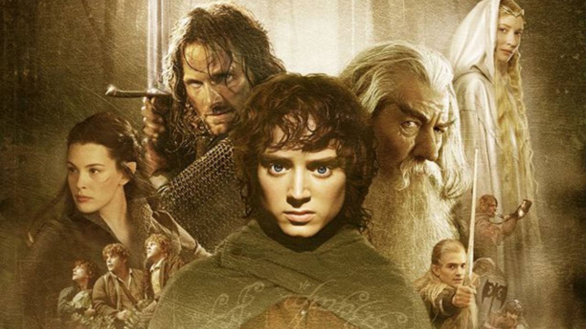
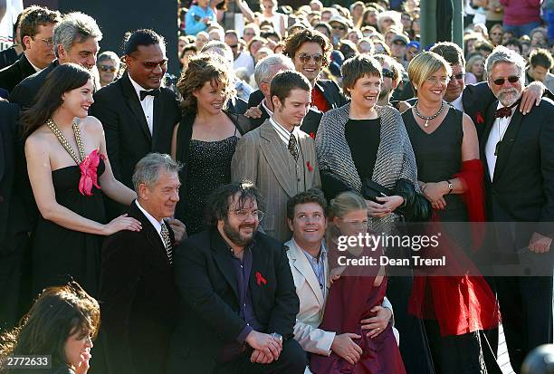

O Filme
O Senhor dos Anéis (The Lord of the Rings, no original) é um livro de alta fantasia, escrito pelo escritor britânico J. R. R. Tolkien. Escrita entre 1937 e 1949, com muitas partes criadas durante a Segunda Guerra Mundial, a saga é uma continuação de O Hobbit (1937). Embora Tolkien tenha planejado realizá-la em volume único, a obra foi originalmente publicada em três volumes (The Fellowship of the Ring, The Two Towers e The Return of the King) entre 1954 e 1955, com cada volume contendo dois livros cada, e foi assim, em três volumes, que se tornou popular. Desde então, a obra foi reimpressa várias vezes e traduzida para mais de 40 línguas, vendendo mais de 160 milhões de cópias, tornando-se um dos trabalhos mais populares da literatura do século XX.
Estrutura da obra
Já foi dito que a obra deveria ser lançada em um único volume, mas foi dividido em três como forma de baratear os custos (havia racionamento de papel na Inglaterra do pós-guerra). Cada volume é dividido em dois tomos ou "livros".
- O primeiro volume, A Sociedade do Anel, publicado em 1954, contém um prólogo, no qual são dadas as características dos Hobbits;
- O segundo volume, As Duas Torres, publicado alguns meses depois de A Sociedade do Anel, também em 1954, continua a história original com mais personagens;
- A saga termina com a publicação em 1955 do terceiro volume, intitulado O Retorno do Rei, que contém diversos apêndices explicativos sobre a história, as línguas, a cronologia da narrativa e outras informações adicionais sobre a mitologia criada por Tolkien para a sua Terra-Média.
O Enredo
A Sociedade do Anel
Frodo Bolseiro é um hobbit do Condado, que recebe de seu tio Bilbo um anel de rara beleza. Esse anel tem uma longa história: foi roubado de uma criatura chamada Gollum (como relatado no livro O Hobbit), e desde então ele tem sido guardado por Bilbo.
O Mago Gandalf, um velho amigo de Bilbo, percebe o poder que aquele anel possui, não sendo um anel comum, mas sim o Um Anel, artefato mágico forjado por Sauron, o Senhor Sombrio, e que fora perdido numa batalha muito tempo antes. Se recuperado, o Um Anel permitiria a Sauron o domínio definitivo sobre toda a Terra-média. O Um Anel, ou Anel do Poder, dera longevidade fora do comum a seu antigo dono, Bilbo, e possuía consciência, uma vontade própria que o conduzia sempre na direção do seu criador e senhor. Gandalf aconselha Bilbo a deixar o Condado, planejado para ocorrer até a festa de aniversário daquele ano. Gandalf parte, para resolver alguns assuntos, mas combinando que voltaria para acompanhar Frodo, porém, não manda notícias durante vários meses. Chegando a data prevista, Bilbo decide deixar o Condado e deixa tudo para Frodo. Depois de um tempo, Gandalf retorna e convence Frodo a partir para destruir o anel, após vender Bolsão, Frodo leva consigo seus amigos Sam, Merry e Pippin para sua aventura.
As Duas Torres
Aragorn, Legolas e Gimli seguem os rastros dos hobbits capturados (Merry e Pippin) e o caminho os leva até a Floresta de Fangorn. Nela encontram o Mago Branco que inicialmente pensam ser Saruman, o traidor. No entanto, o velho enigmático revela-se Gandalf, que morreu enfrentando o Balrog e retornou da morte para cumprir sua missão na Terra-Média.
Os quatro seguem então para Rohan, Terra dos Cavalos. Sua capital Edoras fica no alto de uma colina, onde os rohirrim ergueram Meduseld, O Palácio Dourado. Nele, vive o rei Théoden, cuja mente fora envenenada por Saruman através de um agente infiltrado, o conselheiro Gríma Língua-de-cobra. Gandalf expulsa Grima, cura o rei de seus males, e o aconselha a enfrentar a ameaça de Saruman e partir rumo a Isengard, fortaleza de Saruman, com todos os guerreiros disponíveis.
Enquanto isso, os hobbits Merry e Pippin conseguem escapar dos uruk-hais, e fogem para o interior da Floresta de Fangorn. Lá encontram Barbárvore, um Ent, um gigante em forma de árvore, e cujas origens remontam a tempos muitíssimo mais antigos que a Terceira Era, na qual se passa essa história.
O Retorno do Rei
Gandalf e Pippin entram na cidade de Minas Tirith, onde se encontram com Denethor, regente do reino de Gondor. Gandalf o avisa da guerra próxima, e o regente pede a ajuda de Rohan, mas revela seu rancor por Aragorn, que, sendo descendente direto do último rei, é o herdeiro legítimo do trono de Gondor. Merry, entretanto, permanece com os rohirrim, para servir ao rei Théoden, que reúne todos os guerreiros aptos de seu reino e parte para a guerra em Minas Tirith. Junto com ele vão Aragorn, Legolas e Gimli.
Enquanto isso, Sam adentra na torre de Cirith Ungol, e resgata Frodo, que era mantido prisioneiro. Com muita sorte, ambos escapam dos muitos orques, e adentram Mordor, uma imensa terra devastada, coberta de pó, cinza e fogo, cujo próprio ar é carregado de fumaça venenosa.
Após receberem uma mensagem de Elrond, Aragorn, Legolas e Gimli deixam o exército de Rohan e viajam então para as Sendas dos Mortos. Lá Aragorn convoca um exército de almas penadas/ mortos-vivos (o livro não deixa muito claro) a cumprirem um antigo juramento de lealdade para com Isildur, o primeiro rei de Gondor e seu ancestral direto. Os mortos haviam jurado lutar ao lado de Gondor mas fugiram para as montanhas quando foram chamados à guerra. Isildur então os amaldiçoou a não terem paz, nem na vida nem na morte, até que sua promessa fosse cumprida.
A Recepção
O Senhor dos Anéis sempre foi aclamado pela crítica, tendo elogios fervorosos, com citações de jornais da época de que " O mundo parou pra ler essa obra esplendida, e os que não leram, ainda lerão". essa obra ainda sobrevive para que possa receber as mais diversas opiniões.
O jornal Sunday Telegraph se manifestou à época do lançamento do livro dizendo que ele estava "entre os maiores trabalhos de ficção do século XX". A conclusão parecida, conquanto mais teatral, chegou o Sunday Times, afirmando que "o mundo do Inglês está dividido entre aqueles que leram O Senhor dos Anéis e O Hobbit, e aqueles que ainda vão ler".
W.H.Auden escreveu ao New York Times: "A primeira coisa que pedimos é que a aventura seja […] empolgante; sob este aspecto a inventividade do Sr. Tolkien é incansável […e] o leitor exige que pareça real […] O Sr. Tolkien tem a sorte de possuir um espantoso dom de dar nomes e um olho […] exato para descrições. […] O conto mostra no espelho a única natureza que conhecemos: a nossa própria; também nisto o Sr. Tolkien teve um êxito soberbo. O que ocorreu no Condado […] na Terceira Era […] não somente é fascinante em A.D. 1954, mas é também um alerta e uma inspiração." Sobre a capacidade de inventar nomes, O Senhor dos Anéis conta com 301 nomes de pessoas e animais, e 433 nomes de lugares.
